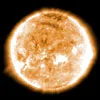
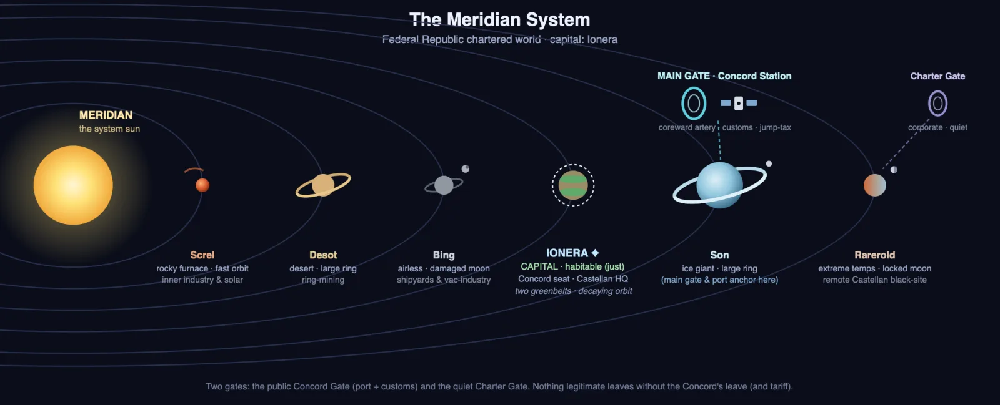

Star Charts
69 locations Thides System star system
Thides System star system
 MacMillian Station IV Space Station
MacMillian Station IV Space Station Church of Saint Barbara venue
Church of Saint Barbara venue Docking Ring dock
Docking Ring dock- Entertainment District Station District
 Nova Nexus venue
Nova Nexus venue The Comets Tail venue
The Comets Tail venue The Silk Abbey venue
The Silk Abbey venue
- MacMillian Station Security Office Station Facility
 Processing I processing level
Processing I processing level Stamp Supply venue
Stamp Supply venue The Main Line district
The Main Line district
 The Beloved Valley spaceship
The Beloved Valley spaceship The Pinnacle Spaceship
The Pinnacle Spaceship
Thides star Thides Gate hyperspace gate
Thides Gate hyperspace gate Thides I › 07-Delta Station space station
Thides I › 07-Delta Station space station Thides II toxic-atmosphere planet
Thides II toxic-atmosphere planet Thides III Earth-like planet
Thides III Earth-like planet Thides IV gas giant
Thides IV gas giant Thides V icy planet
Thides V icy planet Thides VI irradiated planet
Thides VI irradiated planet Thidian Belt › Garnetts Reach outpost
Thidian Belt › Garnetts Reach outpost
Eris System star system
 Eris A star
Eris A star Eris Gate IV hyperspace gate
Eris Gate IV hyperspace gate Eris I planet
Eris I planet Eris II planet
Eris II planet- Eris III › Aethel › Aethel Starport › Bamboo Lounge venue
 Eris IV planet
Eris IV planet Eris V planet
Eris V planet Eris VI planet
Eris VI planet Eris VII planet
Eris VII planet Erisian Belt asteroid belt
Erisian Belt asteroid belt
Corwin System star system
 Corwin A star
Corwin A star Corwin B star
Corwin B star Corwin Gate II hyperspace gate
Corwin Gate II hyperspace gate Corwin Gate III hyperspace gate
Corwin Gate III hyperspace gate Corwin I planet
Corwin I planet Corwin II › Pratrock Dynamics Research Facility 42 research facility
Corwin II › Pratrock Dynamics Research Facility 42 research facility Corwin III planet
Corwin III planet- Corwin III A moon
- Corwin III C moon
 Corwin III D moon
Corwin III D moon
 Corwin IV planet
Corwin IV planet- Corwin V planet

Meridian star system- Concord Station space station
- Meridian I planet
- Meridian II planet
- Meridian III planet
- Meridian IV planet (habitable — for now)
- Meridian V ice giant
- Meridian VI planet
 The Charter Gate hyperspace gate
The Charter Gate hyperspace gate The Concord Gate hyperspace gate
The Concord Gate hyperspace gate
Deep Space & Routes
- Corwin-Eris Route trade route
- Corwin-Thides Route trade route
- Sargasso Void gravitational anomaly